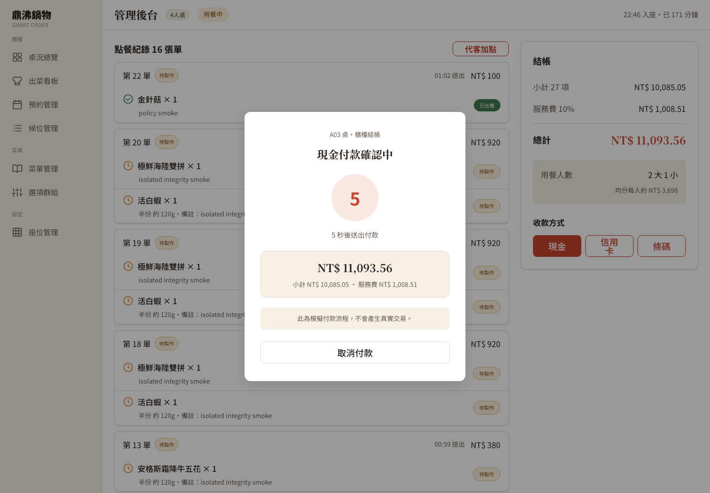
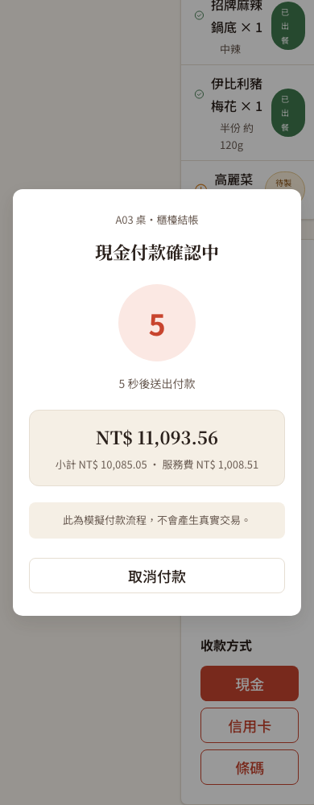

Smart Order · 程式碼走讀與修正紀錄
櫃檯結帳與場次安全
五個已確認的結帳與訂單存取問題，每個都寫成「修正前怎麼壞 → 改成什麼 → 為什麼」；另外說明前端如何避免舊請求覆蓋新帳單，以及場次結束通知怎麼處理。
01 · 哪裡錯
先掌握結帳路徑，再看五個問題
櫃檯先讀某桌目前的用餐場次（session，一組客人的一次用餐）與帳單；店員付款時，前端把看到的總額一起送給後端，後端重算比對，成功才記錄付款、關閉場次。付款對象是「場次編號」，不是會重複使用的桌號。
1. 櫃檯明細、結帳和取消不能只靠藏按鈕
部分管理操作落在公開 API（Application Programming Interface，應用程式介面）路徑之下，沒有員工憑證也能直接呼叫櫃檯明細或結帳網址。只藏按鈕沒用，使用者能自己組 HTTP（Hypertext Transfer Protocol，超文字傳輸協定）請求。
SecurityConfig.java 在公開規則之前明確限制管理路徑：櫃檯明細、場次明細與結帳要 COUNTER（櫃檯）或 MANAGER（店長）；單品取消再加 KITCHEN（廚房）；空場次取消只有店長。為什麼：前端顯示不是安全邊界，要由伺服器擋。
2. 顧客訂單明細必須屬於目前登入的場次
顧客知道或猜到另一張訂單的編號，就能直接開啟那張訂單的明細。只用訂單編號查資料、沒確認所屬場次，登入本身限制不了讀取範圍。
SessionTokenFilter 驗證顧客憑證後，把場次編號放進這次請求；GET /api/order-tickets/{id} 呼叫 OrderSubmitService.getOrder(ticketId, sessionId)，訂單與場次不符就回「找不到」。為什麼回找不到：避免洩漏另一桌的訂單內容。
3. 櫃檯看到的總額必須和實際結帳總額一致
櫃檯打開帳單後，同桌有人加點或取消，店員按付款時畫面金額已過期。結帳請求只帶付款方式，後端用請求到達時的金額直接完成付款。
TableDetail.jsx 在按下付款的瞬間凍結場次編號、付款方式與金額，送出 { method, expectedTotal } 到 POST /api/admin/dining-sessions/{id}/settle。TableService.settle 鎖定場次重算，總額不同就回 BILL_CHANGED 加完整新帳單、不付款；前端更新畫面請店員再確認，不自動重送。為什麼：付款金額必須是店員看過的那個。
4. 桌號被重用後，舊畫面不能結掉新一桌的帳
店員開著某桌舊畫面，原場次結束後桌子接待下一組客人；舊畫面若仍以桌號送付款，可能操作到新場次。舊流程用桌號當付款目標，缺少「哪一次用餐」的精確識別。
櫃檯明細回傳 sessionId、sessionStatus、hasOrderHistory，付款改走 /api/admin/dining-sessions/{id}/settle。TableService.settle 鎖定該場次與桌況，確認仍是開啟中的場次才付款。
5. 倒數必須從 5 到 0，成功後等待 1.5 秒再離開
規格要求先倒數五秒、歸零才送出付款。舊畫面卻只從 3 顯示到 1，之後還會再等約 10 秒，成功後的回頁節奏也不符合需求。
PaymentProcessing.jsx 以明確的階段倒數 5 到 0，只有歸零才呼叫一次付款；送出中鎖住付款與取消，歸零前取消不送付款；成功畫面顯示 1.5 秒才回桌況頁，失敗顯示錯誤。為什麼：畫面上的倒數要等於實際行為。
02 · 怎麼修
舊請求、場次結束與一起接齊的流程
- 舊帳單讀取不覆蓋新帳單：
TableDetail.jsx為每次帳單讀取編流水號（每次加一的編號），只有最新一次能更新畫面；收到BILL_CHANGED也讓先前未完成的讀取失效，再套用錯誤內附的新帳單。為什麼：較早開始、較晚返回的舊讀取，不能把新帳單蓋回去。 - 場次結束可辨認：顧客憑證簽章有效但場次已關閉時，
SessionTokenFilter回 401INVALID_SESSION_TOKEN並附reason: PAID或CANCELLED，真正無效的憑證沒有 reason。前端統一處理：PAID 顯示已結帳畫面，CANCELLED 清憑證回入口，無 reason 走重新掃碼；處理前先核對場次編號，已切到別場次時舊通知不能清掉新場次狀態。 - 整合時補上，不算原作者的缺失：取消沒有訂單的空場次（只有店長能呼叫
POST /api/admin/dining-sessions/{id}/cancel，取消後清購物車並釋放桌子）；帳單即時更新（BillingNotifier在交易提交後才通知員工端，useBillingSocket在重連或網路恢復時也刷新）；付款或取消完成後，交易提交才發出場次結束訊息。 - 既有的保護沒動：後端原本就有同場次結帳鎖防重複結帳，不是缺陷；新增的總額比對補的是畫面過期時的確認。
03 · 驗證
指定案例通過，但有範圍界線
b0c2432：乾淨後端打包通過，209 個來源檔案完成編譯；4 個既有測試只編譯、沒執行，也未新增測試。前端打包通過（產出約 739 KB，工具仍顯示既有的檔案大小提醒）。- HTTP API 冒煙驗證（smoke test，快速走過主要流程）156 項通過，含權限、金額變更、場次結帳與空場次取消。HTTP API 報告（156 項）
- 瀏覽器驗收 27 項通過（15 條主要路徑加 12 條結帳專項）：5 秒倒數、舊帳單讀取淘汰、金額凍結、歸零前取消不送請求、成功後 1.5 秒返回、兩位顧客收到已付款結果、店長取消後顧客回入口、櫃檯無權取消，以及付款後 401 先於 WebSocket 通知到達時仍顯示已結帳。瀏覽器報告（27 項）
- 界線：不含實際收款，不代表所有裝置、瀏覽器或營運情境，也不是完整回歸。
付款視窗畫面紀錄
1440px 與 390px 寬度下可辨識倒數、金額和取消操作
截圖停在倒數 5 秒，隨即按取消，沒有送出結帳請求，不是實際付款。窄畫面結果只代表付款對話框在 390px 內可用，不代表整個後台已適配手機。


04 · 用到的技術與設計模式
本篇真的用到的
- Spring Security 角色權限＋自訂 Filter：
SecurityConfig依 COUNTER／MANAGER／KITCHEN 限制路徑，SessionTokenFilter驗證顧客的 JWT（JSON Web Token，帶簽章的登入憑證）。 - 悲觀鎖（資料列鎖，暫時鎖住一筆資料讓同時操作排隊）：
TableService.settle先鎖開啟中的場次與桌況，再重算與付款。 - 樂觀並發控制（帶預期總額）：前端送
expectedTotal，後端重算不同就拒絕。 - 統一錯誤格式：
SettlementException搭配@RestControllerAdvice，BILL_CHANGED回應內附完整新帳單。 - 交易提交後才通知＋WebSocket／STOMP（Simple Text Oriented Messaging Protocol，簡單文字導向訊息協定） 推播：
BillingNotifier在afterCommit推到/topic/billing，前端useBillingSocket.ts用@stomp/stompjs訂閱。 - 忽略過期回應：帳單讀取流水號只讓最新一次更新畫面（
TableDetail.jsx）。 - 學到什麼：每個請求都要問「代表哪個場次、有沒有權限、金額以哪個時間點為準、舊回應會不會影響已切換的畫面」，驗收也要涵蓋舊讀取晚到、場次先關閉這類先後順序。
05 · 名詞表
本文常用詞
- 場次編號（sessionId）
- 代表一次具體用餐的編號；桌號會重複使用，所以付款一律認場次編號。
- expectedTotal／BILL_CHANGED
- 前端送出的「我看到的總額」／後端發現金額已變時回的錯誤碼。
- JWT — JSON Web Token（JSON 網頁權杖）
- 帶簽章的登入憑證格式；服務端仍要檢查它所屬的場次與目前狀態。
- 401／409
- 401：沒有可接受的登入憑證；409：請求可讀，但資料目前的狀態不允許照做。
- WebSocket（網頁雙向連線）
- 連線建立後伺服器可主動推送更新，本流程用來通知帳單或場次狀態改變。
- afterCommit（交易提交後）
- 先讓資料庫確認付款或取消已正式完成，再發通知，避免通知和實際資料不一致。
- 冒煙驗證（smoke test）
- 用少量端到端操作快速確認主要流程能工作，不能代替完整測試。